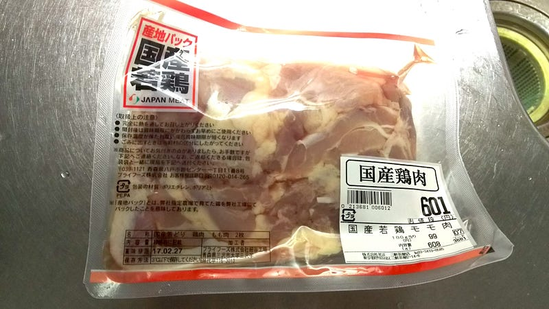
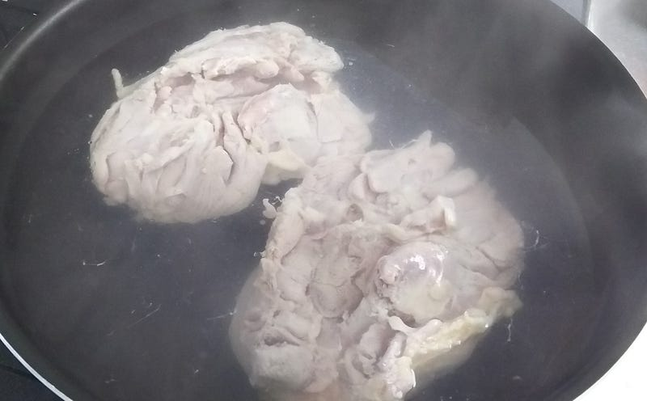
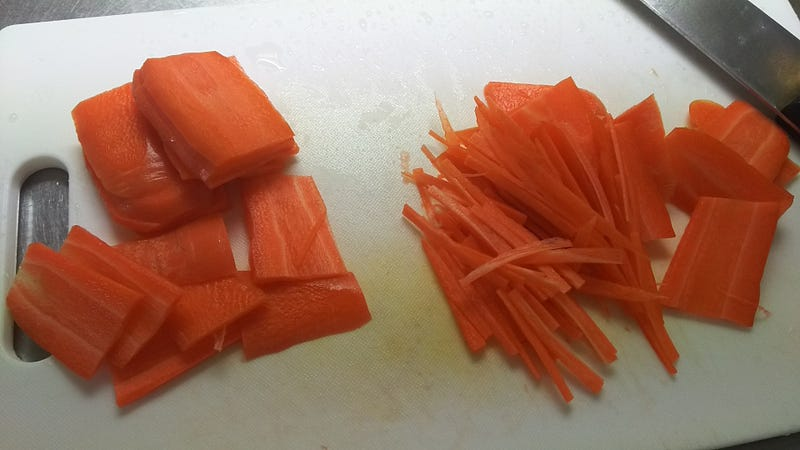
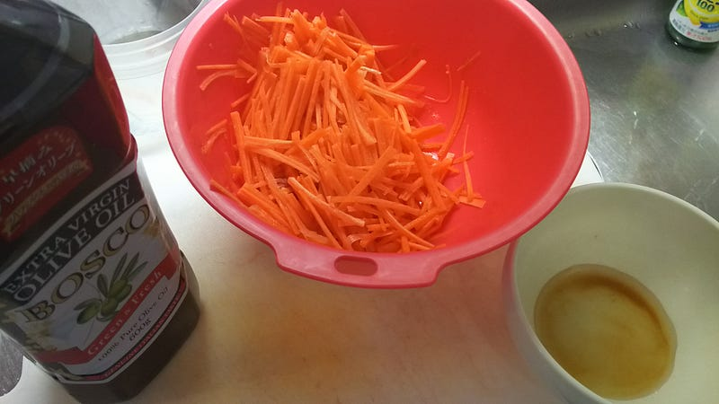
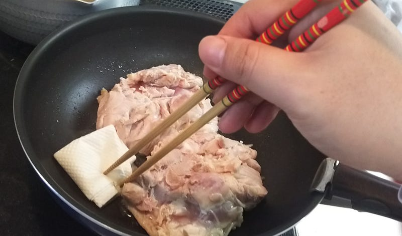
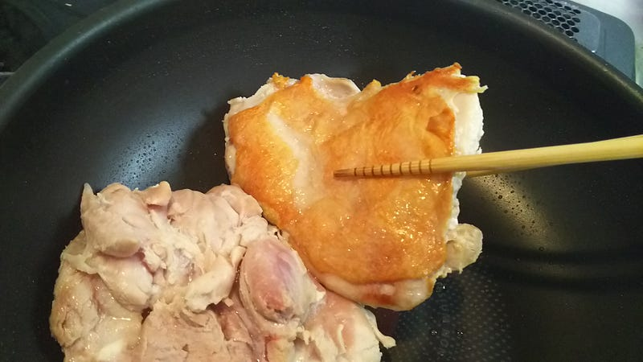
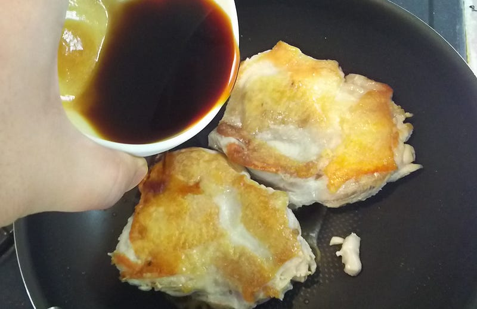
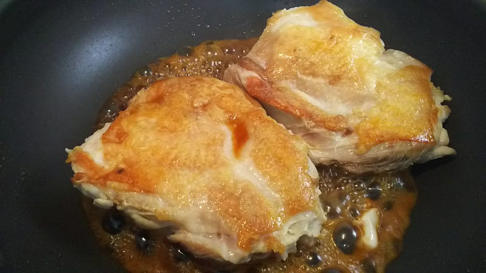
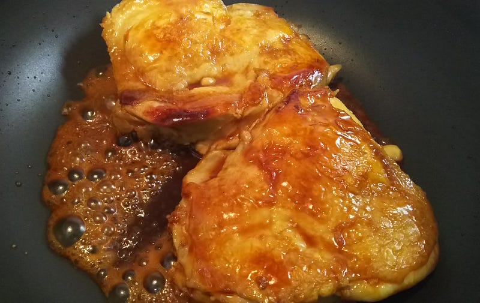
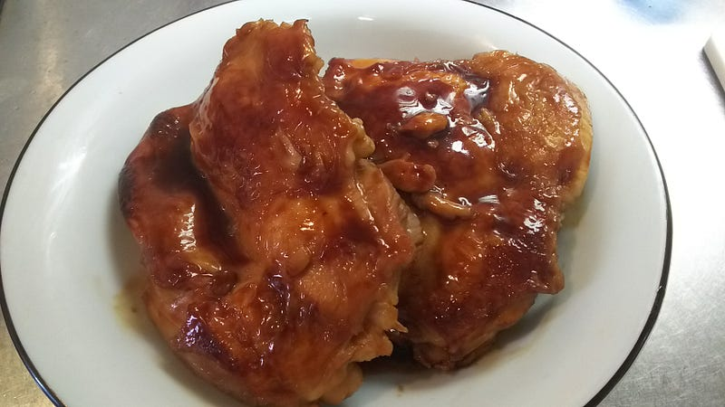

鶏肉の照り焼きとニンジンマリネ
鶏肉の照り焼きとニンジンマリネ
ここのところ料理ブログづいております。今回は鶏肉の照り焼きです。というか、肉丼のエントリのブクマ伸びすぎでしょ。他のエントリとの差がひどい。皆さんお好きなんですなぁ…
昔々、祖父の家の近くにほっかほか亭（？記憶が曖昧なので違う店かも？）があったんですよ。お弁当屋さん。そこで売っていた、鶏の照り焼き弁当というのが、白いご飯に鶏の照り焼き一枚を一口大に切って載せてあるというだけのお弁当。たくあんも2枚くらいついていたかな。
小学生の時に何回か食べてたんだけど、自分の照り焼きの原点はあれ。香ばしい醤油と砂糖の臭い。ふんわり鶏肉。ご飯。はああああ…
時は流れて今は子供が二人います。この間から書いているレシピ全部そうですけど、基本的には飯を作るのに1時間以上かけるわけにはいかない。そんな暇はないんだ！あったとしても週末だけだ！というわけで必然的にすぐできるメニューか、作り置きできるメニューが食事の大半を占めます。鶏肉の照り焼きはすぐできるメニューです。
まずお湯を沸かします。その間に肉を出して、軽くドリップを拭いておきましょう。僕、肉は大好きですけど、臭い肉はそんなに好きじゃありません。

お湯を沸かすのは、この照り焼きを作る時に火加減をなるたけ気にしたくないので先に軽く熱を通すためです。とは言え、煮ちゃうと味が抜けるし…ってことで、沸騰したお湯に肉を入れ、火を切って10分弱ほど放置、というのを最近やってみてます。どれだけ効果があるかと言われると数値を計ったりしてないのでなんですが、とりあえず生焼けすることはなくなった気がしてる。

もちろん洗い物を増やしたくないから焼く鍋と同じものでこの下ゆでをするといいですね。
7〜8分ただ待ってるのもあれなので、その間にもう一品作ります。ニンジンが一本冷蔵庫にあったので、ニンジンのマリネを作りましょう。
ニンジンは細切り。気合いを込め、リズムよく切れば5分くらいでできるはずだ！できなくても別に火を通すわけじゃないので、鶏肉の方を優先しましょう。

ニンジンに合わせるタレ的なものはお酢、オリーブオイル、塩、砂糖、隠し味の醤油くらい。味付けに自信がない時は酢と塩を若干遠慮がちにしておいて、食べる直前に最後の調整をできるようにしておくといいですね。

ボウルに全部いれて混ぜたら、食べるときまでつけときましょう。30分〜2時間くらいかな。多めに作っておけば二日、三日くらいは持つはず。
さて、ニンジンのマリネもできたところで、茹でてから7~8分たったかな？そしたら肉をあげて、早速皮目から焼きます。皮が良い狐色になるまで弱火〜中火でジクジク苛めましょう。油がでるので、これはキッチンペーパーとかでガンガン拭き取ります。

狐色になったらひっくり返します。僕はここで軽く酒を振りかけて臭いを飛ばします。

アルコールをちゃんと飛ばしてね！そしたら今度は味付けです。そう、ここまで塩もなにもしてなかったのです…

味付けはめんつゆ２、醤油２、砂糖１くらいの割合。あんまり大量に入れないで少しずつ様子を見ながら入れましょう。火は中火〜強火くらい。

ああ、もううまいね。うまいよ、絶対。ここはしかし慌てず、ちゃんと調味料がぶくぶくいってる状態をキープしながら、箸で肉を操って沸騰してる調味料をこそげ取るイメージで。
皮目も照りをまとわせたいので、これをそれぞれの面で2回ずつ（合計4回）くらいやります。調味料は焦げ付かないように適時足していきましょう。

あとは焦げ付かないように良い感じの照りになったところでフライパンからあげます。

ふう、この照り、美しい… すぐに食べなくてもレンジでチンしても充分美味しいし、なんとこの写真を撮る作業と鍋を洗う時間を入れても正味40分でできあがりました。
「早い」は正義。
というわけで我が家の鶏肉の照り焼きでした。